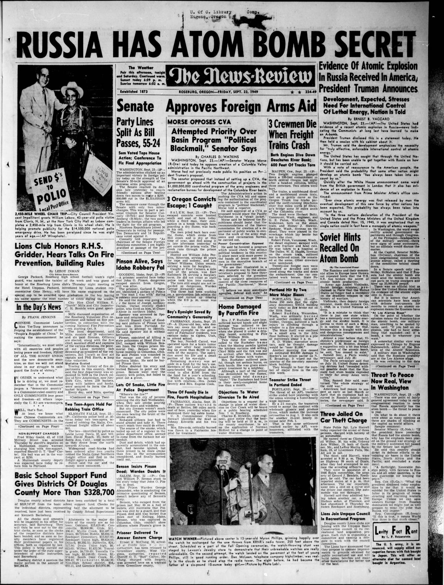
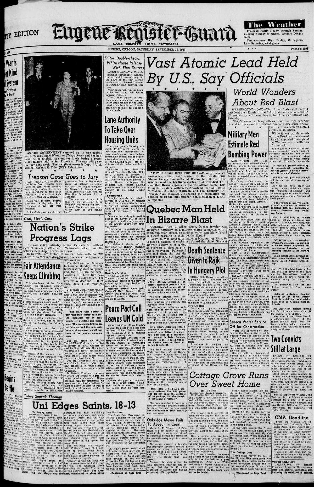
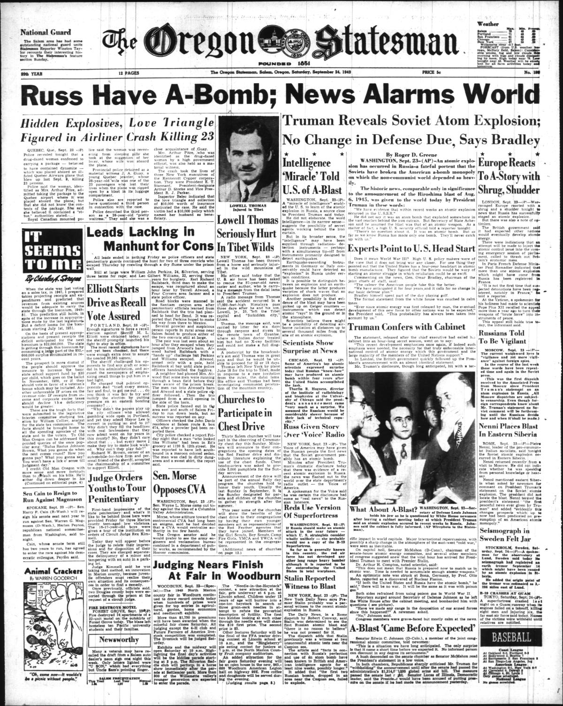

HN HN-575 · September 23, 1949 · Science, Invention & Technology > Physics, Chemistry & Material Sciences > Nuclear science
Source: Indianapolis Times, p. 1 — original page; U.S. State Department, records of announcement.
Report: The banner said the United States would act to make more atomic bombs as Russia fired an atomic explosion, and Truman's statement that Soviet testing had recently occurred broke the perceived American monopoly.
Assessment: The Soviet RDS-1 test happened August 29, 1949; September 23 was the U.S. announcement date, not the detonation date. The paper conveys the contemporaneous intelligence and policy shock; descriptions of the Soviet program's scope remained preliminary.
Authentic scans retrieved from Historic Oregon Newspapers (University of Oregon). Article crops are located using the archive's own OCR word coordinates and rendered at native crop resolution; page scans are reduced-size access renditions. No images were generated, mocked, or retouched.



Not yet acquired. Queued for provider-specific acquisition testing (see source-acquisition manifest).
URL (preserved verbatim): https://newspapers.library.in.gov/?a=d&d=IPT19490923.1.1
Saved research report: Historical_Newspaper_Event_Research_553-577_2026-10-23.md
Evidence note: A newspaper report means a historical publication made a claim; it does not establish that claim as fact. Contemporary reporting is separated from later scholarly context and our own assessment.